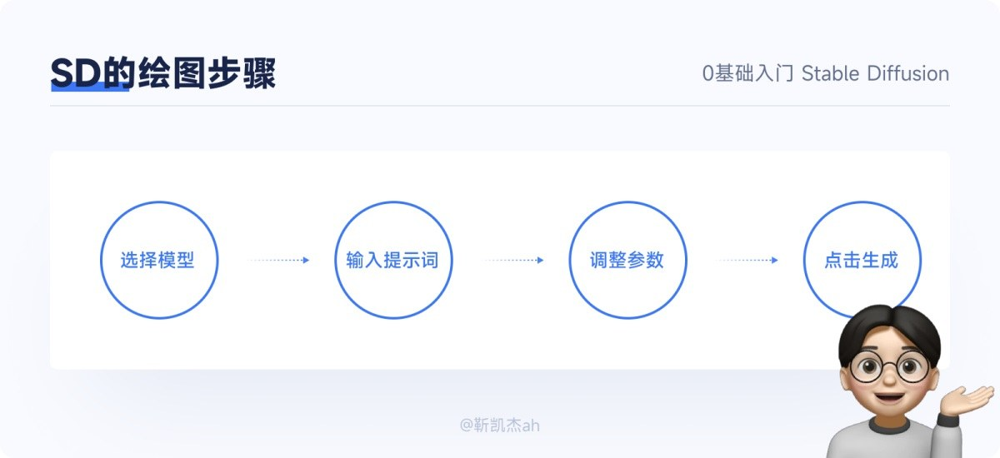
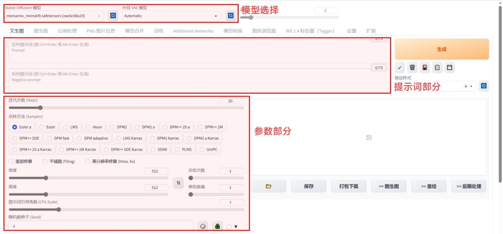
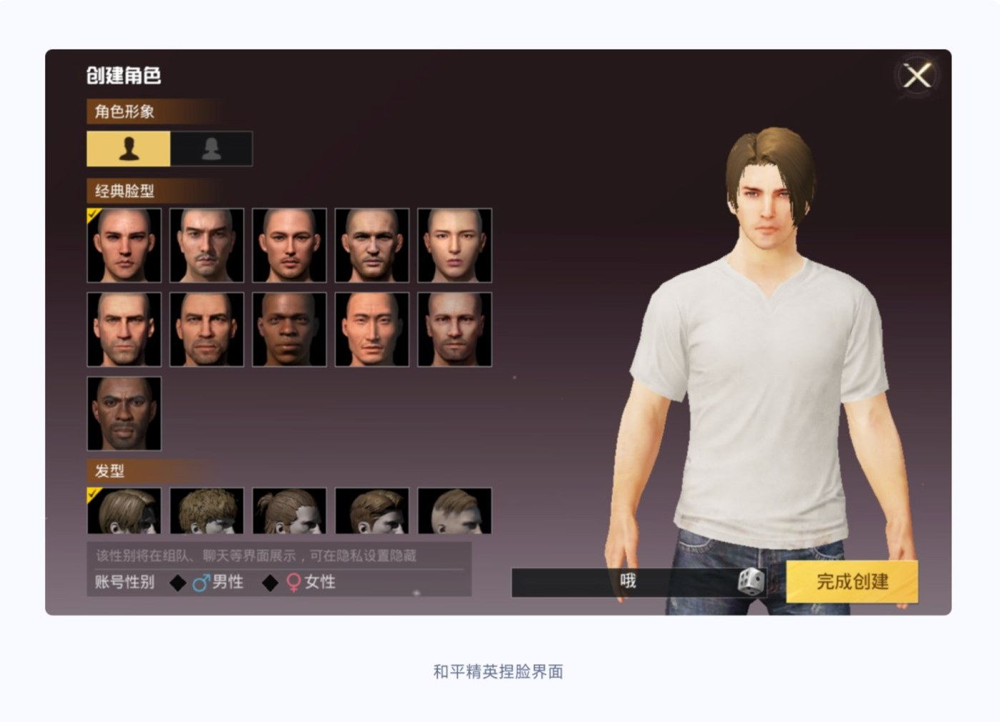

SD 学习笔记
Stable Diffusion 入门笔记：从软件流程、五大模型分类，到提示词的书写规范与语法，再到采样、迭代、高分修复等核心参数的取舍。
本文整理自一份 SD 学习笔记，覆盖从模型到提示词再到参数的完整入门路径。内容按原文结构与表述整理，方便回看与检索。
01 / 软件总览
SD 的绘图流程可以概括为四步：选择模型 → 输入提示词 → 设置参数 → 完成出图。

界面大致分为三块：模板选择、提示词部分、参数部分。

02 / 模型
五大模型分类
模型按作用可分为三类：
- 基础底模型——checkpoint（单独使用）。
- 辅助模型——Embedding、LoRA、Hypernetwork（配合底模使用）。
- 美化模型——VAE。
可以用烹饪来理解它们的区别：基础底模型相当于「炒」，辅助模型是「爆炒、小炒」，美化模型则是更细节的方式，例如「盐爆、葱爆、油爆」。在 SD 中，基础底模型必须有且只能有一种，而后面的模型没有限制——可以没有，也可以是一种或多种。
模型的下载和使用
- 辨别类别——从常用网站下载时已知类别；若来自百度网盘等其他渠道，可借助网站查询：spell.novelai.dev。
- 放入文件夹——把模型文件放到对应文件夹；可同时放一张同名预览图，调用时直接按图选择。命名上用「/」分类整理，例如「二次元/XXX」。
- 调用模型——基础底模型直接选择（找不到就点右侧刷新稍等）；VAE 在下拉框选，一般默认即可，出图发灰时再换。其他模型先点对应 icon 再点模型，上方正向提示词框会出现对应词，再点一下或删掉即可取消。部分模型还需输入特定触发词才能生效。
03 / 提示词
提示词也就是我们对 AI 的指令。正向提示词是对画面的描述，例如一个女孩、月亮、吉他、沙发；反向提示词是你不想在画面中出现的元素或属性，例如低质量、畸形的手。
1. 基本规范
- 提示词包括标点符号全部用英文的。
- 单词、短语、句子基本上等效。例如「1girl, sofa, sitting」与「A girl sitting on the sofa」对 SD 来说等效。
2. 书写提示词的整体思路
给正向提示词时，一般通过分类描述的方式给出，分为整体描述、主体、场景三类。
- 整体描述 · 画质——高画质 / 中等 / 低画质，2k、4k 等。
- 整体描述 · 画风——CG、二次元、真人等。
- 整体描述 · 镜头——人物占比，半身像还是全身像。
- 整体描述 · 色调——冷色调或暖色调。
- 主体 · 头部——眼睛大小颜色形状、鼻子大小形状、嘴巴大小形状、下巴形状；皮肤颜色纹理；面部特征细节（眼睛纹理、唇色、发色等）。
- 主体 · 服饰——服装、配饰等细节，可参考捏脸与服饰选择界面。
- 主体 · 姿势——人物的姿势，坐、立、跑等。
- 场景——基础：时间、地点、天气；进阶可加入细节，如天空中的蝴蝶、花瓣等。

3. 提示词的语法
有了提示词还不够，还要知道怎么把它组成 SD 可识别的格式。
- 连接方式——不同提示词之间用英文逗号分隔；提示词越靠前权重越高，所以主体放前面。
- 强化 / 弱化（权重数值）——(提示词:权重数值)，取值 0.1～100，默认 1，小于 1 弱化、大于 1 强化，例如 (a girl:0.8)。
- 强化 / 弱化（括号）——加 () 表示强化、[] 表示弱化，可套多层加强程度，例如 ((a girl))。
提示词进阶网站：
04 / 参数
- 1. 采样方法——一般用 DPM++ 2M / DPM++ 2M Karras / UniPC；想要变化用 Euler a、DPM++ SDE、DPM++ SDE Karras、DPM2 a Karras。
- 2. 迭代步数——SD 用多少步把描述画出来。一般 20～40 步足够；每多一步都给 AI 更多机会比对并调整，但更费时间，也并非越高越好。
- 3. 面部修复——按个人喜好开关，对最终成像效果影响不大。
- 4. 平铺图——一般用不到。
- 5. 高分辨率修复——以重绘方式放大图像并补充细节。子参数：放大算法用默认值；高分迭代步数 10～20；重绘幅度 0.5～0.8（过小效果差、过大与原图差异大）；放大倍率即最终图与原图分辨率的比值，如 512×512 设 2 倍后为 1024×1024。
- 6. 总批次数 / 单批数量——一次性出图数量。搬 4 块砖：一次搬 4 块搬 1 次＝批次 1 / 单批 4；一次搬 1 块搬 4 次＝批次 4 / 单批 1。非顶级显卡一般保持单批数量为 1，靠增加总批次来多出图。
- 7. 提示词引导系数——生成画面与描述词的趋近程度，一般 7～15，太高也会出问题。
- 8. 随机数种子——像做菜时的特定调料，影响最终图像。不同种子生成不同图；每张图都有对应种子，想还原或画相似图必须保证该值相同。种子不变时，即便模型改变，图的大概结构与配色也会相似。输入固定值即固定种子，点骰子 icon 变 -1 为随机值。
- 9. 变异随机种子——相当于加入第二种调料，后面的变异强度指两种调料的占比，数值越大越接近第二种，0 表示完全不用。常用于确定图后生成其他相似画面，例如做 IP 时保持画面内容不变、生成略有差异的图择优。
「 模型打底、提示词描述、参数微调——SD 出图就是这三件事的组合。 」
— 原文要点整理